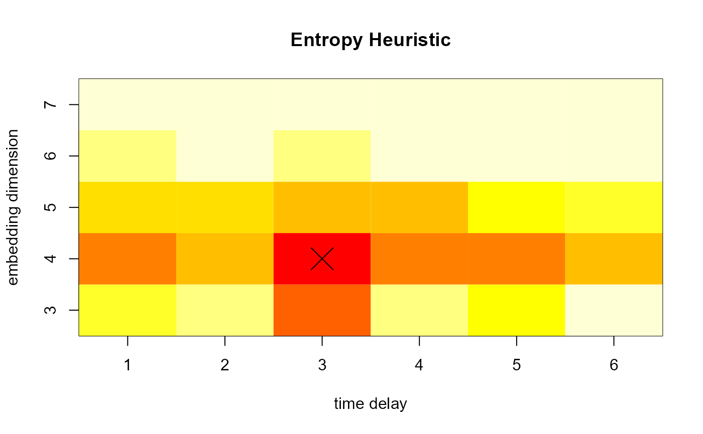

entropy.heuristic.RdThe information content of a permutation distribution depends crucially on the choice of the embedding dimension. Too small embedding dimensions narrow the representational power of the distribution, too large embedding dimensions dilute the estimation of the distribution. The Minimum Entropy Heuristic (MinE) automatically chooses an embedding dimension with an optimal representational entropy as proxy for representational power.
entropyHeuristic(X, m.min=3, m.max=7, t.min = 1, t.max = 1) # S3 method for mine print(x, ...) # S3 method for mine summary(object, ...) # S3 method for mine plot(x, normalize = FALSE, type = "image", mark.optimum = TRUE, col = heat.colors(12), ...)
| X | A matrix representing a set of time series. Columns are time series and rows represent time points. |
|---|---|
| x | An entropy heuristic object of type |
| object | An entropy heuristic object of type |
| m.min | Minimum embedding dimension |
| m.max | Maximum embedding dimension |
| t.min | Minimum time-delay |
| t.max | Maximum time-delay |
| ... | Further arguments for the generic print, summary, and plot method. |
| normalize | Normalize values to range [0;1]. |
| type | Either 'image' or 'contour'. Specifies the plot type. |
| mark.optimum | Mark the optimal embedding dimension and/or time-delay. |
| col | A color map to represent entropy values on. |
For a range of embedding dimensions, the average entropy of the dataset is calculated. The embedding dimension with
the lowest entropy is chosen. print and plot is available for result objects.
The plot of a heuristic object shows the entropy values depending on a range of embedding dimensions and time-delays. If only embedding dimension or only time-delay is varied, a line plot is show to indicate the parameter yielding minimum entropy. Otherwise, an image plot is shown that indicates minimum entropy depending on both parameters.
A list is returned with the following elements:
The chosen embedding size.
A vector with average entropy values corresponding to each entry in entropy.ms
A vector of the embedding dimensions that were searched for the optimal embedding.
Brandmaier, A. M. (2015). pdc: An R Package for Complexity-Based Clustering of Time Series. Journal of Statistical Software, 67(5), 1--23.
Brandmaier, A. M. (2012). Permutation Distribution Clustering and Structural Equation Model Trees. Doctoral dissertation. Saarland University, Saarbruecken, Germany.
# (1) # # create a sine-wave with added noise # and display a plot showing the average permutation entropy # depending on varying choices of the embedding size # (by default time-delay is not searched over) heuristic <- entropyHeuristic( sin(1:100)+rnorm(100,0,1) ) plot(heuristic)# (2) # # calculate both optimal embedding dimension and time-delay # heuristic <- entropyHeuristic( sin(1:100)+rnorm(100,0,1), t.min=1, t.max=6 ) plot(heuristic)